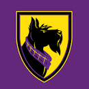

Ballston
Scottie Dog
The mascot is the Scottie dog, dedicated to long-time athletic director/coach Coach William R. Scott.
Fun Facts
- Scottish terriers were originally working dogs, used to control vermin in the Highlands.
- Some 40 Scottish terriers led the teams out at the Glasgow 2014 Commonwealth Games opening ceremony.
- On both sides of the Atlantic, Scottish terriers peaked in popularity between the World Wars.
- The Scotties distinctive black colouring is a 20th-century phenomenon.

Link to index: index